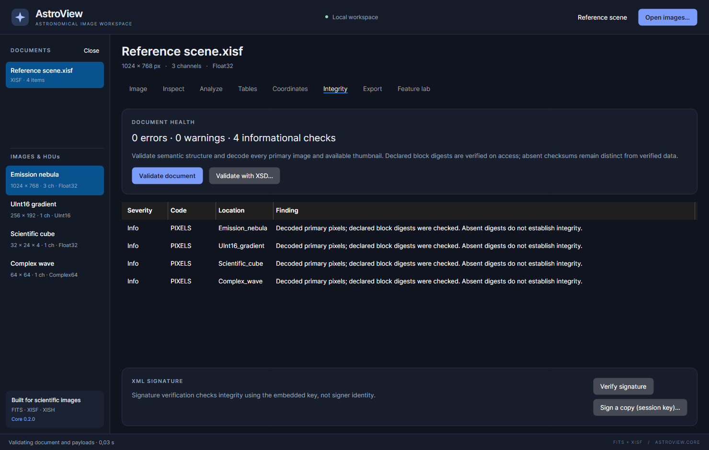

Validation and signatures
Use Integrity to inspect semantic diagnostics, decode image payloads and check supported checksums/signatures. These checks answer different questions; read the result for the check you actually ran.

Validate a document
- Select the document.
- Open Integrity and click Validate document.
- Wait for the operation to complete.
- Read the summary and the Severity, Code, Location and Finding columns.
For XISF, this checks supported semantic structure and attempts to decode every primary image and available thumbnail. Declared block digests are checked when their data is accessed. For FITS, results include supported semantic diagnostics and checksum-card results.
| Result | Meaning |
|---|---|
| Error | A supported validation/decoding check failed; inspect the affected location before using/exporting the result |
| Warning | Something needs attention but is not necessarily a complete read failure |
| Info | Context such as successful pixel decoding; read whether a digest actually existed |
| No checksum present | There was no corresponding digest to verify; this is different from a valid digest |
Opening a file and seeing a preview does not verify every image or ancillary block in a multi-image document. Likewise, a successful structure check is not a claim that every possible FITS/XISF convention is implemented.
If a checksum fails, preserve the original file and check the source/copy rather than hiding the finding by removing its digest. A missing distributed block can allow header inspection while preventing a full integrity check.
Validate against an XSD
For XISF, Validate with XSD… lets you select a local schema file.
- Obtain the appropriate trusted schema for your required XISF revision/workflow.
- Click Validate with XSD… and select it.
- Read the resulting schema and semantic findings.
The app does not silently fetch a universal schema from the internet. DTD and external network resolution are disabled for schema loading. A schema requiring external includes must be prepared for this local-resolution policy. XSD validation checks XML rules; it does not by itself prove that image blocks decode or that a document was signed by someone you trust.
Verify a signature
With a XISF document selected, click Verify signature. Read the signature summary rather than assuming that every file is signed. Verification checks signed XML using the embedded key. It does not authenticate a person's identity or establish that the embedded key belongs to a trusted producer.
Run document validation/payload decoding as well if you need the declared data digests checked. XML signature verification and decoding every image are separate actions.
Sign a demonstration copy
Sign a copy (session key)… demonstrates creating a signed XISF copy.
- Select a XISF document and review any edits.
- Click Sign a copy (session key)….
- Choose a new output name.
- Reopen the result and click Verify signature.
- Run Validate document to inspect its payloads too.
The operation generates a temporary RSA key and discards the private key after the operation. It is not an identity certificate manager or a way to reuse a saved signing identity later. The public verification material travels with the signed document.
Editing or re-encoding signed content can invalidate or remove its earlier signature. Sign the resulting copy again after the intended changes. Existing unprotected data blocks may also need checksum-bearing re-encoding before a document can be signed under the required block-integrity rules.